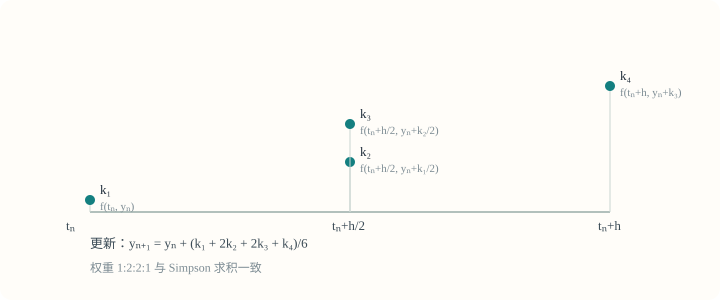
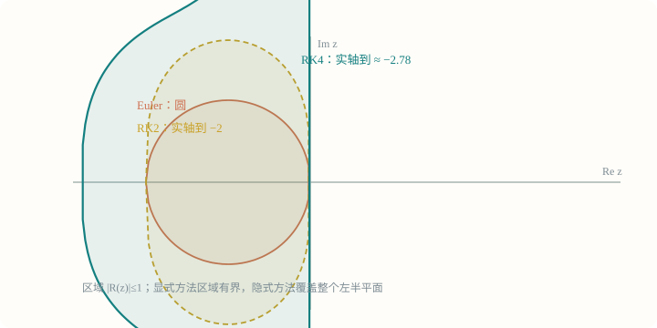

CHAPTER 26 · NUMERICAL ANALYSIS
常微分方程数值解（二）：Runge-Kutta 与稳定性
Heun 法用两次求值换到二阶。能否用更多次求值换更高阶？可以——这就是 Runge–Kutta 家族。但“阶数高”并不等于“一定能用”：真正决定成败的往往是稳定域，而这一点会在刚性问题上变成生死线。
01 · Runge-Kutta 框架
输入：f(t,y)、初值 (t₀,y₀)、步长 h。输出：yₙ₊₁。假设：f 对 y 满足 Lipschitz 条件（相容性与收敛性的前提）。
Heun 法的启发是：区间 [tₙ,tₙ₊₁] 内单点斜率不够准，多采样几个点取加权平均就更准。把一个 s 级显式 RK 方法写成：
系数 (A,b,c) 整体记作 Butcher 表。cᵢ 是采样点在区间内的位置，aᵢⱼ 是构造第 i 个斜率时对已知斜率 kⱼ 的权重，bᵢ 是最终输出权重。一致性只要求 Σbᵢ=1 与 cᵢ=Σⱼaᵢⱼ；要提到 p 阶，就必须让泰勒展开一直匹配到 h^p 项——阶数越高，匹配条件数量增长得越快（p=5 需 17 个条件），所以高阶 RK 的系数表很难“手工凑”。
02 · 经典 RK4
最常用的 RK 方法是经典四阶（RK4）。它每步四次求值，采样点为起点、两个中点、终点：
其中 k₁=h f(tₙ,yₙ)、k₂=h f(tₙ+h/2, yₙ+k₁/2)、k₃=h f(tₙ+h/2, yₙ+k₂/2)、k₄=h f(tₙ+h, yₙ+k₃)。全局误差 O(h⁴)，而每步只要 4 次 f。权重 1:2:2:1 与 Simpson 求积一致，并非巧合：RK4 本质上是用 Simpson 型加权平均去近似区间积分。

k₂,k₃ 都在中点，但带入的 y 估计不同（分别用 k₁/2 与 k₂/2），这正是它比 Heun 多出的一级“探路”。03 · 自适应步长
固定步长几乎总是坏主意：解在有的区域光滑、有的区域陡峭。自适应步长用一对不同阶数的公式在每步估计局部误差，再据此调步长。设高阶解为 ŷ、低阶解为 y，误差估计就是它们的差：
实用的方案是嵌入对（embedded pair）：用同一组 k 同时算出四阶和五阶结果，差作为误差。历史上 Fehlberg 4(5) 用 6 个 k 给出 4、5 阶两解；现代标准是 Dormand–Prince 5(4)（dopri5）——scipy.integrate.solve_ivp 的默认方法，系数设计让五阶解的误差系数更小，并支持密集输出（在任意点插值而不用重新积分）。
04 · 稳定性与稳定域
稳定性的标准探针是测试方程 y'=λy（Re λ<0），其真解单调衰减。数值方法每步给出 yₙ₊₁=R(z)yₙ，z=hλ，R 叫稳定性函数。绝对稳定区域就是所有满足 |R(z)|≤1 的 z 的集合——一旦 hλ 掉在区域外，数值解就会振荡发散。
常见方法的 R(z) 与实轴上的稳定区间：向前 Euler R=1+z，区间 [−2,0]；RK4 R=1+z+z²/2+z³/6+z⁴/24，区间约 [−2.78,0]；向后 Euler R=1/(1−z) 与梯形法 R=(1+z/2)/(1−z/2) 则覆盖整个左半平面——这就是 A-稳定性。

|R(z)|≤1，z=hλ）。区域边界由数值求根算出：Euler（橙）是圆；RK2（黄）实轴延伸到 −2；RK4（青）延伸到约 −2.78。所有显式方法的区域都有界——这就是刚性方程必须用隐式方法的根本原因。05 · 失败边界
| 场景 | 原因 | 表现 | 对策 |
|---|---|---|---|
| 阶数高就安全？ | 精度与稳定性是两回事 | 高精度公式仍振荡发散 | 查稳定域 |R(hλ)|≤1 |
| 刚性方程 | |λ| 极大，显式稳定域有界 | 步长被稳定性卡死 | 换隐式（第 27 章） |
| 把容差当全局误差 | 自适应控的是局部误差 | 总误差仍累积偏大 | 收紧容差 / 后续打磨 |
不连续 f | 泰勒假设被破坏、误差估计失真 | 步长震荡/阶数降低 | 分段积分、在间断处重启 |
最常见也最危险的误读是“高阶 = 能用”。反例：y'=−10⁶y，真解在 t∼10⁻⁶ 尺度就衰减到零，但 RK4 必须 h≤2.78×10⁻⁶；若图省事取 h=10⁻⁴，|hλ|=100 远超稳定边界，数值解会疯狂振荡直到 NaN，而真解本是光滑的。
06 · 实验与选型
对 y'=−y, y(0)=1（解析解 e⁻ᵗ）在 t=5 处比较三种方法的全局误差与观测阶数：
失败边界（可验证）：第一，阶数越高误差下降越快，但稳定性另论；第二，y'=−100y 时 RK4 的稳定边界约 h≤0.0278，超一点就发散；第三，减小步长看误差是否按阶数下降，是区分“截断误差”与“实现错误”的可靠手段。
import math
def rk4(f, y0, T, h):
n = round(T / h); y = y0
for _ in range(n):
k1 = h * f(y)
k2 = h * f(y + k1/2)
k3 = h * f(y + k2/2)
k4 = h * f(y + k3)
y = y + (k1 + 2*k2 + 2*k3 + k4) / 6
return y
f = lambda y: -y
T, exact = 5.0, math.exp(-5.0)
# 四阶验证：h 减半，误差应降到约 1/16
e1 = abs(rk4(f, 1.0, T, 0.1) - exact)
e2 = abs(rk4(f, 1.0, T, 0.05) - exact)
p = math.log2(e1 / e2) # 观测阶数 ≈ 4
assert 3.5 < p < 4.5
print(f"RK4: e(0.1)={e1:.3e}, e(0.05)={e2:.3e}, p≈{p:.2f}")
# 稳定性：y'=-100y，RK4 稳定边界 |h*lambda| <= 2.78
stab = lambda h, lam=-100.0: rk4(lambda y: lam*y, 1.0, 1.0, h)
assert abs(stab(0.02)) < 1.0 # |h*lambda|=2.0 <= 2.78：稳定
assert abs(stab(0.03)) > 1.0 # |h*lambda|=3.0 > 2.78：发散
print("stable h=0.02:", f"{stab(0.02):.3e}", "| unstable h=0.03:", f"{stab(0.03):.3e}")这段实验验证了两件事：RK4 的观测阶数升至约 4（h 减半、误差约降为 1/17）；以及 |hλ| 一旦超过稳定边界时 RK4 发散。工业界默认的 solve_ivp(method='RK45') 就是 Dormand–Prince 5(4) 自适应实现。
| 方法 | 阶数 | 每步 f | 实轴稳定区间 | 适用场景 |
|---|---|---|---|---|
| 向前 Euler | 1 | 1 | [−2,0] | 教学 |
| Heun | 2 | 2 | [−2,0] | 一般非刚性 |
| RK4 | 4 | 4 | [−2.78,0] | 通用主力 |
| RK45 自适应 | 5(4) | 6 | 略大于 RK4 | 带误差控制（默认） |
| 向后 Euler/梯形 | 1/2 | 解方程 | 整个左半平面 | 刚性问题 |
原始资料与延伸阅读
本章将文献结论与本文独立构造的数值示例区分：RK 格式与 Butcher 表、RK4 的四阶精度与 O(h⁴) 全局误差、稳定性函数 R(z) 与绝对稳定区域均为理论结果；图 2 的稳定域边界与实验中的误差、阶数为本文计算值或教学演示。
- E. Hairer, S. P. Nørsett, G. Wanner, Solving Ordinary Differential Equations I, Springer, 2nd ed., 1993。RK 方法阶数条件、稳定性函数与 A-稳定性。
- SciPy · scipy.integrate.solve_ivp：
RK45（Dormand–Prince 5(4)）、BDF、Radau与rtol/atol误差控制。 - J. R. Dormand & P. J. Prince, A family of embedded Runge–Kutta formulae, J. Comput. Appl. Math. 6 (1980) 19–26。dopri5 嵌入对及其阶数/误差系数设计。